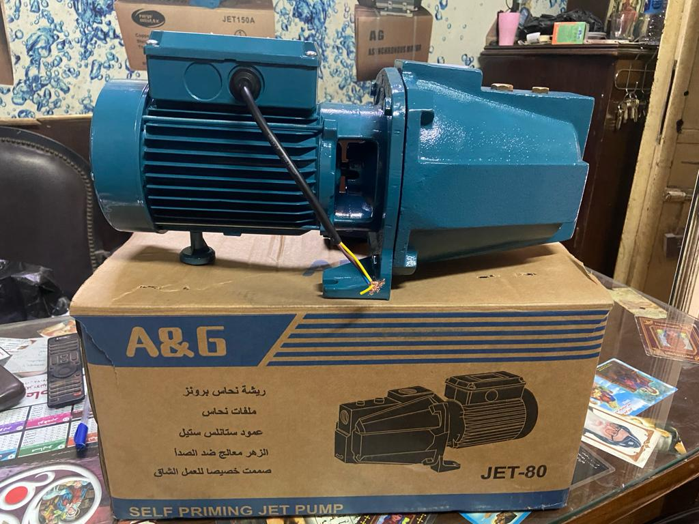
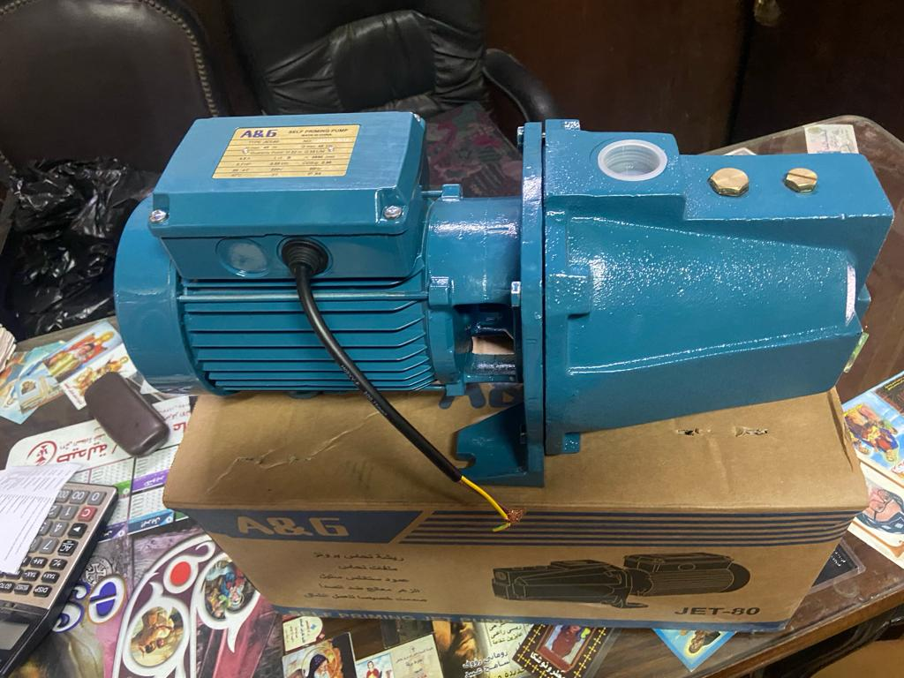

Surface Pumps
Domestic Surface Water Pumps
This group highlights the pump models used for domestic and daily service needs, making it easier to present power and use differences to customers.
- Suitable for household and day-to-day water lifting
- Shows jet-pump style and practical service models
- Easy to present by power range and usage size